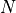
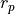
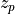
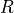
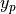
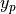

WSF_J2_PERTURBATION_PROPAGATOR¶
- propagator WSF_J2_PERTURBATION_PROPAGATOR¶
propagator <name> WSF_J2_PERTURBATION_PROPAGATOR ... Orbital Element Commands ... ... Common Orbital Propagator Commands ... end_propagator
Overview¶
WSF_J2_PERTURBATION_PROPAGATOR simulates the propagation of a satellite in orbit about an ellipsoidal Earth. Both the primary effect of the Earth’s point mass gravitational attraction and secondary effect due to the (mean first order) gravitational perturbation effects of the oblate Earth are modeled. The resulting orbit is an ellipse in inertial space that slowly rotates due to changing orbital elements. The WSF_J2_PERTURBATION_PROPAGATOR is useful for modeling satellites in specialized Earth orbits, such as sun-synchronous and Molniya orbits.
Commands¶
Orbital State Commands¶
- orbital_state … end_orbital_state¶
Specify the orbital state in the form of an epoch or epoch_date_time, and one of the following:
Sufficient orbital element commands
An orbit … end_orbit command block containing a Two-Line Element (TLE) (when using a WSF_NORAD_SPACE_MOVER).
- position <real> <real> <real> <length-units>¶
Sets the initial location of the space mover. This command must be used in conjunction with the velocity command.
- velocity <real> <real> <real> <speed-units>¶
Sets the initial velocity of the space mover. This command must be used in conjunction with the position command.
Note
The Position and velocity inputs must be provided sequentially, with the velocity input immediately following position.
//Example: Orbital elements declaration platform test-oe WSF_PLATFORM add mover WSF_SPACE_MOVER orbital_state epoch 2021245.18563 semi_major_axis 10000 km eccentricity 0.2 mean_anomaly 255 deg inclination 30 deg raan 120 deg argument_of_periapsis 80 deg end_orbital_state end_mover end_platform //Example: Position/velocity declaration platform test-rv WSF_PLATFORM add mover WSF_SPACE_MOVER orbital_state epoch 2021245.18563 position 800 0 0 km velocity 100 3000 -50 m/s end_orbital_state end_mover end_platform //Example: TLE declaration //Note: TLE declaration is only allowed within a WSF_NORAD_SPACE_MOVER platform test-tle WSF_PLATFORM add mover WSF_NORAD_SPACE_MOVER orbital_state orbit 0 HST 1 20580U 90037B 20216.30423610 .00000333 00000-0 92680-5 0 9996 2 20580 28.4681 168.2117 0002666 190.3324 294.3699 15.09238375401891 end_orbit end_orbital_state end_mover end_platform
- epoch [<epoch-value> | platform_creation_epoch]¶
Specify the epoch that corresponds with the reference epoch at which the orbital elements are valid.
If platform_creation_epoch is specified, initial epoch will be set to the platform’s creation time.
//Example: platform_creation_epoch usage //In this case, initial epoch will be set to 1 hour after simulation start platform test-oe WSF_PLATFORM creation_time 1 hour add mover WSF_SPACE_MOVER orbital_state epoch platform_creation_epoch semi_major_axis 10000 km eccentricity 0.2 mean_anomaly 255 deg inclination 30 deg raan 120 deg argument_of_periapsis 80 deg end_orbital_state end_mover end_platform
- epoch_date_time <month> <day-of-month> <year> <hh:mm:ss>¶
Specify the date and time that corresponds with the reference epoch at which the orbital elements are valid.
Note
The month is expressed in a three character format as follows:
jan | feb | mar | apr | may | jun | jul | aug | sep | oct | nov | dec
The time of day is referenced to UT midnight and using a 24 hour clock.
Orbital Element Commands¶
- designator <string-value>¶
Specify the designator for the space mover.
Default “00001A”
Note
If a TLE is being used, the designator is provided by the TLE satellite international designator in line one.
- eccentricity <real-value>¶
Specify the eccentricity of the orbit. The specified value must be greater than or equal to zero (circular orbit).
Default: 0
Note
eccentricity must also be less than 1.0 (parabolic orbit) for the WSF_SPACE_MOVER and WSF_NORAD_SPACE_MOVER.
- semi_major_axis <length-value>¶
Specify the semi-major axis of the ellipse defining the orbit.
Default: None. This must be provided or derivable from other commands. See Derivation of Orbital Element Input Values.
Note
For an eccentricity of zero, the semi-major axis becomes the radius of a circle.
Note
This input is equivalent with revolutions_per_day, as the two are related by Kepler’s 3rd law. If both are specified, the last one specified is used.
- revolutions_per_day <real-value>¶
Specify the number revolutions per day the satellite orbits the Earth.
Default: None. This must be provided or derivable from other commands. See Derivation of Orbital Element Input Values.
Note
This input is equivalent with semi_major_axis, as the two are related by Kepler’s 3rd law. If both are specified, the last one specified is used.
- periapsis_radius <length-value>¶
Specify the periapsis radius of the ellipse defining the orbit. This is the smallest distance between the satellite and the center of the central body.
Default: None. This must be provided or derivable from other commands. See Derivation of Orbital Element Input Values.
Note
For an eccentricity of zero, the periapsis radius is equal to both the apoapsis radius and the semi-major axis.
Note
This input is equivalent with periapsis_altitude, as the two are related by the mean radius of the central_body. If both are specified, the last one specified is used.
- apoapsis_radius <length-value>¶
Specify the apoapsis radius of the ellipse defining the orbit. This is the largest distance between the satellite and the center of the central body.
Default: None. This must be provided or derivable from other commands. See Derivation of Orbital Element Input Values.
Note
For an eccentricity of zero, the apoapsis radius is equal to both the periapsis radius and the semi-major axis.
Note
This input is equivalent with apoapsis_altitude, as the two are related by the mean radius of the central_body. If both are specified, the last one specified is used.
- periapsis_altitude <length-value>¶
Specify the periapsis altitude of the ellipse defining the orbit. This is the smallest distance between the satellite and the surface of the central body.
Default: None. This must be provided or derivable from other commands. See Derivation of Orbital Element Input Values.
Note
For an eccentricity of zero, the periapsis altitude is equal to the apoapsis altitude.
Note
This input is equivalent with periapsis_radius, as the two are related by the mean radius of the central_body. If both are specified, the last one specified is used.
- apoapsis_altitude <length-value>¶
Specify the apoapsis altitude of the ellipse defining the orbit. This is the largest distance between the satellite and the surface of the central body.
Default: None. This must be provided or derivable from other commands. See Derivation of Orbital Element Input Values.
Note
For an eccentricity of zero, the apoapsis altitude is equal to the periapsis altitude.
Note
This input is equivalent with apoapsis_radius, as the two are related by the mean radius of the central_body. If both are specified, the last one specified is used.
- raan | right_ascension_of_ascending_node <angle-value>¶
Specify the right ascension of the ascending node (“raan”). This is the angle, measured counterclockwise along the celestial equator from the vernal equinox (the angle of right ascension) that the satellite crosses the equator from south to north (the ascending node).
Default: 0 deg
Note
raan values must be greater than or equal to zero and less than 360 degrees (
 radians).
radians).Note
raan is referenced to the True of Date coordinate system.
- inclination <angle-value>¶
Specify the separation angle of the tangent to the orbital plane with the Earth’s axis of rotation.
Default: 0 deg
Note
inclination values must be greater than or equal to zero (equatorial orbit) and less than or equal to 180 degrees (
 radians; retrograde equatorial orbit).
radians; retrograde equatorial orbit).Note
inclination is referenced to the True of Date coordinate system.
- mean_anomaly <angle-value>¶
Specify the angular location of the satellite in its orbit at the epoch time. This angle is measured from the periapsis and represents the angle the satellite would traverse at a constant angular rate.
Default: 0 deg
Note
mean_anomaly values must be greater than or equal to zero and less than 360 degrees (
radians).Note
This input is equivalent with true_anomaly. See Derivation of Orbital Element Input Values.
- true_anomaly <angle-value>¶
Specify the angular location of the satellite in its orbit at the epoch time. This angle is measured from the periapsis and represents the true angular location of the satellite.
Default: 0 deg
Note
true_anomaly values must be greater than or equal to zero and less than 360 degrees (
radians).Note
This input is equivalent with mean_anomaly. See Derivation of Orbital Element Input Values.
- argument_of_periapsis <angle-value>¶
Specify the angle of the perigee (periapsis) with respect to the Earth’s surface. This angle is measured from the ascending node.
Default: 0 deg
Note
argument_of_periapsis values must be greater than or equal to zero and less than 360 degrees (
radians).
- descriptor <string-value>¶
Specify an arbitrary descriptor (tag) for the space vehicle.
Note
If a TLE is being used, the descriptor is provided in line 0.
Derivation of Orbital Element Input Values¶
For some orbital elements, there are multiple ways to specify a particular characteristic of the orbit.
Symbol |
Command |
|---|---|
 |
|
|
|
|
|
 |
|
|
|
 |
|
|
|
|
|
|


Orbit Size/Shape¶
The commands semi_major_axis and revolutions_per_day are equivalent inputs, as they are related by Kepler’s Third Law:

where:
 is the number of seconds in a day (86400)
is the number of seconds in a day (86400) is the gravitational constant of the central_body
is the gravitational constant of the central_body
Note: Not to scale.¶
The commands periapsis_radius and periapsis_altitude are equivalent inputs because they are related by the central body radius. The same is true of apoapsis_radius and apoapsis_altitude. See the diagram above and the equations below:

where  is the mean radius of the central_body.
The periapsis_radius, apoapsis_radius, eccentricity, and semi_major_axis are related by the following two equations:

There are two equations with four unknowns; If two are specified, the other two can be determined. If only one of the parameters is specified,  (eccentricity) is assumed to be zero, and all four parameters can still be determined.
(eccentricity) is assumed to be zero, and all four parameters can still be determined.
Mean/True Anomaly¶
The commands mean_anomaly and true_anomaly are equivalent inputs, related by the following equations:

where:
 is the eccentric anomaly, shown in the figure below.
is the eccentric anomaly, shown in the figure below. is the true anomaly, shown in the figure below.
is the true anomaly, shown in the figure below. is the mean anomaly, which is measured from the periapsis and represents the angle the satellite would traverse at a constant angular rate
is the mean anomaly, which is measured from the periapsis and represents the angle the satellite would traverse at a constant angular rate

This file was derived from: Eccentric and true anomaly.PNG:, CC BY-SA 4.0, https://commons.wikimedia.org/w/index.php?curid=48384905¶
Orbit Command for Two-Line Elements (TLEs)¶
- orbit … end_orbit¶
Specify a Two Line Element (TLE) that defines mean orbital elements and other data used to propagate a satellite. Two Line Elements are usually acquired from an existing source such as the Spacetrak database (http://www.space-track.org) or Celestrak (http://www.celestrak.com/NORAD/elements). Unlike ordinary AFSIM inputs, the column formatting, field length, and character format must be exactly as specified below.:
orbit *<(optional) satellite descriptor>* *<first line of TLE>* *<second line of TLE>* end_orbit
The exact formatting and content of two-line elements are explained below:
TITLE INFORMATION: Line 1 Column Characters Description ----- |--- |---- 1 1 Line No. Identification 3 5 Catalog No. 8 1 Security Classification 10 8 International Identification 19 14 YRDOY.FODddddd 34 1 Sign of first time derivative 35 9 1st Time Derivative 45 1 Sign of 2nd Time Derivative 46 5 2nd Time Derivative 51 1 Sign of 2nd Time Derivative Exponent 52 1 Exponent of 2nd Time Derivative 54 1 Sign of Bstar/Drag Term 55 5 Bstar/Drag Term 60 1 Sign of Exponent of Bstar/Drag Term 61 1 Exponent of Bstar/Drag Term 63 1 Ephemeris Type 65 4 Element Number 69 1 Check Sum, Modulo 10 Line 2 Column Characters Description ----- |--- |---- 1 1 Line No. Identification 3 5 Catalog No. 9 8 Inclination 18 8 Right Ascension of Ascending Node 27 7 Eccentricity with assumed leading decimal 35 8 Argument of the Perigee 44 8 Mean Anomaly 53 11 Revolutions per Day (Mean Motion) 64 5 Revolution Number at Epoch 69 1 Check Sum Modulo 10
An Example TLE for the satellite Vanguard-1 is shown below:
orbit 1 00005U 58002B 09105.24506411 .00000084 00000-0 11810-3 0 4337 2 00005 034.2551 191.5961 1850437 000.0334 000.0199 10.83999999762276 end_orbit
Note
The WSF_SPACE_MOVER currently utilizes only the classical orbital elements contained in the TLE and interprets them as being instantaneous, not mean, elements.
Note
Use the Modify_tle_list perl script to convert lists of TLEs to AFSIM platform lists.
Common Orbital Propagator Commands¶
- central_body … end_central_body¶
central_body <central-body-type> polar_offset_angles ... ... end_central_body
Specify the central body and related ellipsoid model that defines the origin of the coordinate system used for orbital propagation. Depending on the propagator type, propagation is affected by the central body’s associated gravitational parameter.
Options for <central body type> are the following:
earth_wgs72 (Earth World Geodetic System 1972): The central body ellipsoid is defined according to the WGS-72 standard.
earth_wgs84 (Earth World Geodetic System 1984): The central body ellipsoid is defined according to the WGS-84 standard.
earth_egm96 (Earth Gravity Model 1996): The central body ellipsoid is defined according to the EGM-96 standard.
moon: The central body ellipsoid is defined according to published lunar parameters.
sun: The central body ellipsoid is defined according to published solar parameters.
jupiter: The central body ellipsoid is defined according to published Jovian parameters.
Default The central body selection specified in the global_environment (the default for which is earth_wgs84).
Note
If the specified central_body type is for a different central body from that defined in the global_environment the reported location of the parent platform will be with respect to the global environment’s central body.
Note
This command is currently only utilized for orbital propagation with the WSF_KEPLERIAN_PROPAGATOR and the WSF_J2_PERTURBATION_PROPAGATOR, limited to Earth central bodies.
- polar_offset_angles <angle-value> <angle-value>¶
Specify the central_body’s polar offset angles (
 and , respectively) of the Celestial Intermediate Pole (CIP) with respect to the WCS (ITRS) coordinate system. Providing these values (of the order of tenths of arc-seconds) enables very precise conversions between ECI and WCS coordinates.
and , respectively) of the Celestial Intermediate Pole (CIP) with respect to the WCS (ITRS) coordinate system. Providing these values (of the order of tenths of arc-seconds) enables very precise conversions between ECI and WCS coordinates.Default The polar offset angles specified in the global_environment (0.0 rad 0.0 rad)